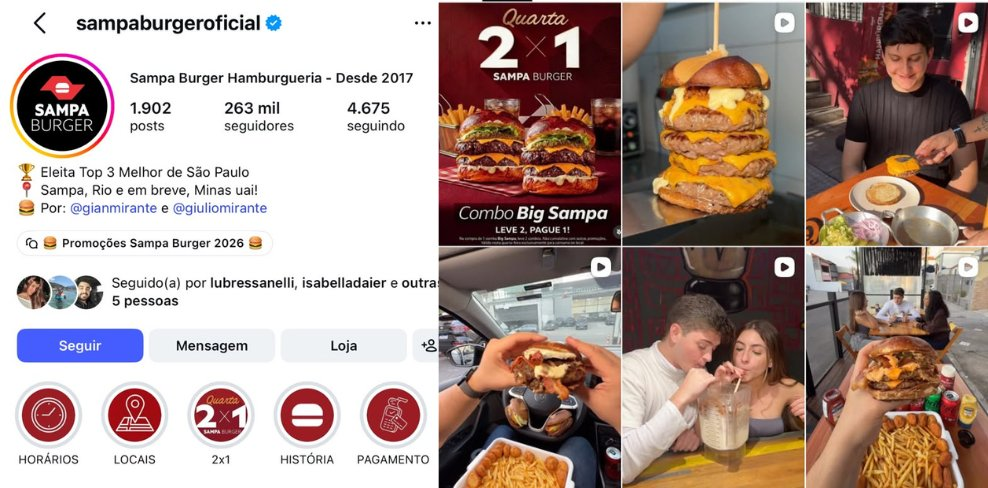
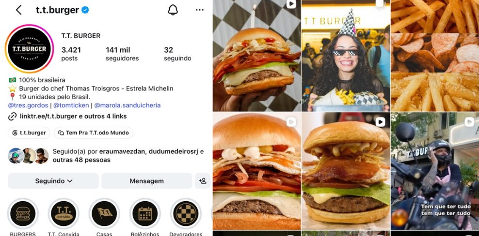
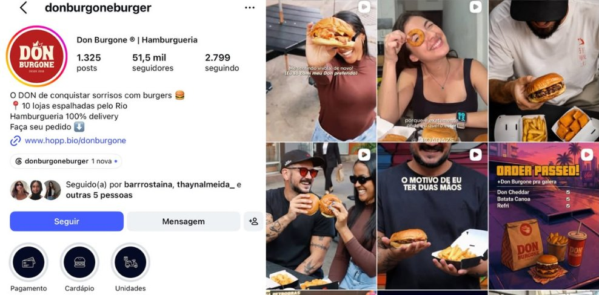
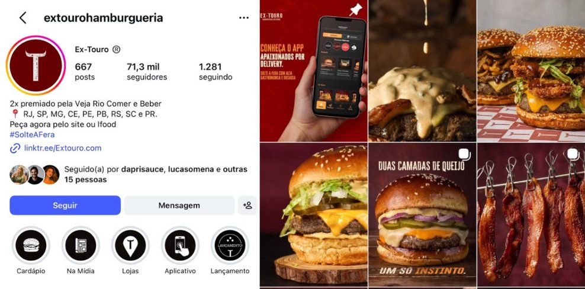
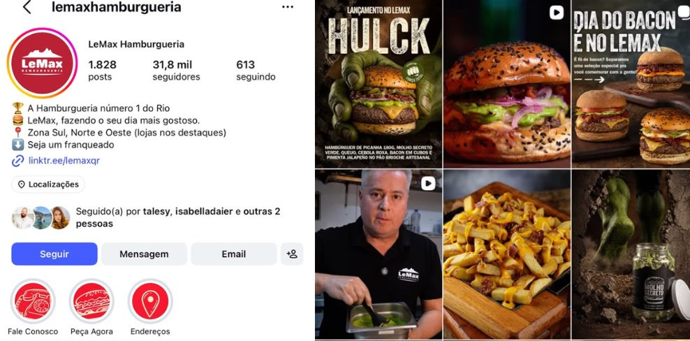
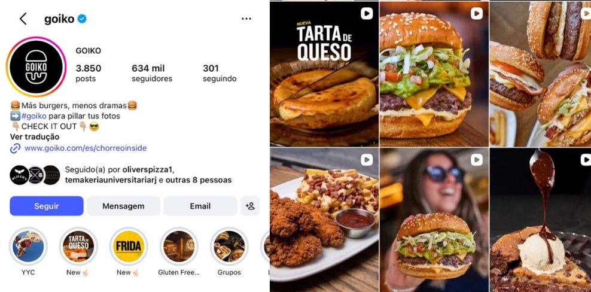
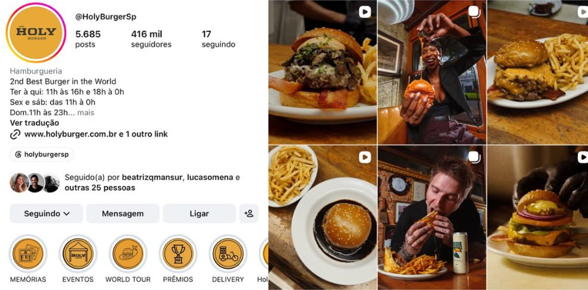
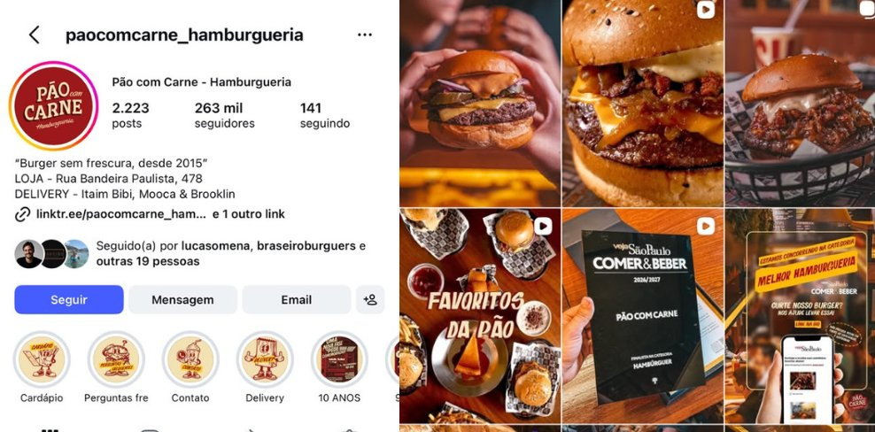

A Ogro tem seis anos, produto elogiado por quem entende de gastronomia, operação padronizada e um público fiel. O que ainda não existe é um digital do mesmo tamanho.
Apesar do sucesso consolidado no produto e na operação, a marca ainda não atingiu todo o seu potencial no digital como pode. Vamos trabalhar a presença digital para espelhar a qualidade da marca e o que ela vem construindo esses anos.
O foco da marca é delivery. Apesar de contar com algumas lojas físicas, o consumo majoritário ocorre em casa. E é justamente neste ambiente que o Ogro Steaks encontra sua força: conforto, comodidade, padrão.
O produto é excepcional. Os burgers recebem elogios de outros profissionais da gastronomia, clientes exigentes e personalidades. Ainda assim, a comunicação atual não traduz totalmente essa vivência.
A página está sob shadow ban, no banco de reservas da seleção do Meta, por inconsistência. Existe um público físico fiel que não se estende para o digital, e muita oportunidade de crescimento.
Sem estratégia nova aplicada, apenas mantendo o que estava sendo feito e ajustando um pouco a linguagem, o engajamento já está 10 vezes maior em comparação ao início do projeto.
E os conteúdos de bastidor e rotina puxam muito mais conversa do que os de produto puro. Um post de bastidor chegou a 88 comentários em 136 curtidas.
Algumas prioridades emergenciais para ajeitar o perfil.
O link aponta para o App Mundo Rão, descontinuado. Quem chega por indicação ou por um conteúdo do Jimmy encontra uma porta fechada.
Destaque de 20% de desconto ocupando área nobre com oferta de meses atrás.
É onde a pessoa que já decidiu procura. Fichas sem foto real, sem descrição padronizada e com informação desencontrada. Vamos fazer junto com vocês, já que a titularidade é de vocês.
Facebook sem publicação há meses e site a atualizar. Precisam contar a mesma história que o resto.
Muita foto guardada e pouco vídeo. Como a entrega hoje é puxada por Reels, isso limita o que dá para publicar. Vamos precisar de uma diária mensal para atualização dos conteúdos, seja em loja, seja com Igor, Jimmy e Bárbara.
Um perfil que estava parado não volta postando todo dia, porque isso piora a inconsistência que causou o shadow ban. Três a quatro publicações por semana, com espaço entre elas para cada conteúdo ser entregue. O propósito não é sair postando qualquer coisa e sim aplicar o planejamento e deixar as publicações entregarem o que precisam. A publicação precisa rodar, o algoritmo precisa entregar e a gente precisa analisar os resultados, para sempre estar medindo o alcance das publicações e a performance delas.
O mercado de hamburgueria está cheio de marcas disputando atenção com mais carne, mais queijo, mais exagero visual e mais promoção.
Desde 2017 · Top 3 Melhor de SP · expandindo pro Rio e Minas · by @gianmirante e @giuliomirante

100% brasileira · burger do chef Thomas Troisgros, Estrela Michelin · 19 unidades pelo Brasil

O DON de conquistar sorrisos com burgers · 10 lojas espalhadas pelo Rio · 100% delivery

2x premiado Veja Rio Comer e Beber · RJ, SP, MG, CE, PE, PB, RS, SC, PR · #SolteAFera

"A Hamburgueria número 1 do Rio" · Zona Sul, Norte e Oeste · seja um franqueado

Espanha · "Más burgers, menos dramas" · cresceu 50K para 400K em 2 anos só com influenciador orgânico

"2nd Best Burger in the World" · posicionamento ousado, sem meio-termo

"Burger sem frescura, desde 2015" · 11 anos de história como parte do storytelling

Construir uma narrativa linear e emocional com base na história real dos fundadores. Através de uma série em redes sociais, apresentar gradualmente a jornada de Jimmy e Igor, os bastidores da criação do Ogro Steaks, a amizade, os perrengues, as ideias.
Fortalecer o posicionamento no digital como marca de conforto e verdade. Entregar estética caseira, cenas reais, momentos de alívio, que conectem com a rotina das pessoas.
Jimmy como autoridade, memória, presença. Igor como técnica, bastidores, humor. Os dois juntos como força motriz do projeto.
Mostrar o cuidado nos insumos, o carinho na cozinha, o motivo por trás de cada receita. Explicar por que cada burger tem esse sabor.
Cada post deve contar uma parte da história. Nada é aleatório: tudo constrói a identidade, reforça os valores e aproxima o cliente da experiência.
Tom de voz: amigável, carismático, direto.
O Cara Comum: gerar identificação. Mostrar que todo mundo merece prazer simples, verdadeiro e acessível.
O Amante: reforçar a indulgência como um ato de autocuidado.
O Rebelde: quebrar o padrão da estética fria e artificial.
Ninguém nunca contou a história do Ogro Steaks. Burger bonito qualquer um faz. Qual a cultura da marca? O que tem de diferente aqui? Me dá um motivo pra gastar meu suado dinheirinho com você.
Constância com quadros de dia fixo, conteúdo gravado em lote e calendário aprovado com antecedência. É o que resolve a inconsistência que gerou o shadow ban.
Instagram, Google, site, cardápio e unidades contando a mesma história. Hoje cada ponto diz uma coisa diferente, e isso custa venda em quem está a um clique de pedir.
Conteúdo que conversa com a operação e leva a pessoa para o canal próprio, onde a margem é melhor. Depende do cardápio próprio, em implementação pelo time da ROB.
Sair da disputa de quem tem o hambúrguer maior e entrar na disputa de quem a pessoa lembra quando chega em casa cansada.
Conteúdo, campanha e benefício conversando com o canal próprio que vai ser implementado, para que a comunicação acompanhe a virada de chave desde o começo.
Trabalhar CRM, experiência de marca, eventos, marketing aplicado nas ruas e nas unidades, merchandising e a experiência do cliente como um todo.
| Bloco | Objetivo | Conteúdo | Frequência | Papel principal |
|---|---|---|---|---|
| Isso deu Ogro | Contar a história da marca e reintroduzir os sócios | Jimmy, Igor, origem, perrengues, decisões, amizade, arquivos e bastidores | Temporada de 8 episódios | História, conexão, interesse |
| Já deu por hoje | Gerar identificação e compartilhamento | Vida adulta, cansaço, conforto, casa, humor, creators, POVs e trends | Recorrente | Descoberta, identificação, compartilhamento |
| Papo de Ogro | Construir autoridade e aprofundar a marca | Jimmy com gastronomia e memória. Igor com técnica, operação, bastidores e humor | Recorrente | Autoridade, valor percebido e interesse |
| Quem fez o seu | Mostrar produto e curiosidades da operação | Cozinha, montagem, mãos, chapa, macros, ASMR, POV e processo real | Recorrente | Desejo, produto, experiência |
| Ogro responde | Explorar feedback e aproximar clientes | Reviews, Google, marketplaces, comentários, DMs e respostas de Jimmy ou Igor | Recorrente | Prova social, confiança, relacionamento |
| Levamos a sério demais ou Fazer o quê, exageramos | Reconhecer clientes e criar histórias reais | Surpresas, clientes recorrentes, histórias, presentes e entregas especiais | 1 vez por mês | Fidelidade, comunidade, fandom |
| Conteúdos fora dos quadros | Manter o perfil vivo e conectado ao momento | Produto, food porn, ASMR, carrosséis, creators, trends, campanhas, UGC e lançamentos | Conforme calendário | Alcance, desejo, campanha, venda e compartilhamento |
| Apontado na análise | Quadro correspondente |
|---|---|
| Curiosidades técnicas de operação. Mostrar o cuidado nos insumos e o motivo por trás de cada receita | Quem fez o seu |
| Feedback de clientes precisam ser mais explorados, como prova social | Ogro responde |
| Dois especialistas com bagagens complementares, e o quadro sobre o White Castle | Papo de Ogro |
| Entretenimento, humor e conexão. Falar de forma descontraída, honesta e acessível | Já deu por hoje |
| Sócios consumindo Ogro em casa, longe da skin de trabalho | Já deu por hoje |
| A série sobre Jimmy e Igor, com momento confessionário | Isso deu Ogro |
| Influencers alinhados com personalidade que encaixa com a comunicação do perfil | Conteúdo com creators |
A Ogro não precisa apenas voltar a comunicar melhor. Precisa voltar a ser relevante, reconhecível e desejada no digital.
Agora o desafio é ampliar a presença sem virar uma hamburgueria genérica de rede.
O objetivo é claro:
O mercado de hamburgueria está cheio de marcas disputando atenção com mais carne, mais queijo, mais exagero visual e mais promoção.
A Ogro tem a oportunidade de ocupar outro espaço. Não queremos ser lembrados simplesmente pelo tamanho do hambúrguer. Queremos ser lembrados pela sensação de:
A Ogro pode ocupar o território da recompensa confiável: aquela escolha que resolve o fim de um dia cansativo sem risco de decepção.
Nosso consumidor não deve ser definido apenas como "25 a 55 anos". Ele tem um estado de espírito.
É alguém que trabalha, resolve problemas, vive conectado, toma decisões o dia inteiro e chega à noite querendo uma coisa simples:
Ele valoriza qualidade, mas não quer frescura. Gosta de boas marcas, mas percebe rapidamente quando estão forçando uma personalidade. Quer prazer, confiança e uma escolha que valha o dinheiro.
A cena que deve orientar nossa comunicação é simples: ele está voltando para casa e pensa em Ogro.
A Ogro deve se posicionar como uma:
Não queremos ocupar o lugar de fast-food. Também não queremos voltar para um premium distante ou sofisticado demais.
produto sério + ambiente casual + personalidade forte + experiência confiável.
Não queremos transformar "exagero" apenas em quantidade de carne ou queijo. Queremos dar um significado maior para isso.
A marca precisa construir ativos que ninguém consiga copiar simplesmente trocando o logotipo.
Deve ser o fundador, anfitrião e guardião do produto, não apenas o rosto das campanhas.
A autoridade técnica que garante o funcionamento impecável da operação.
Deve ser tratado como potencial produto-ícone, e não apenas mais uma opção no cardápio.
Pode ser nosso território de autoridade gastronômica.
Pode ser nosso território de identificação cultural.
Pode transformar atendimento em reputação.
O objetivo é chegar a um ponto em que alguém veja uma comunicação e pense:
A lógica é: uma situação muito reconhecível da vida adulta, uma pequena tensão e a Ogro entrando como aquele momento em que a pessoa finalmente se permite parar. A vida adulta aconteceu. Agora a pessoa quer parar, ficar em casa, comer bem e não pensar muito. O quadro mistura humor, conforto, rotina real e trends, sempre com uma estética simples e próxima. Também vamos incluir os próprios sócios curtindo o relax e longe da "skin de trabalho", como apontado pela Bárbara pra gente.
| Semana | Episódio | Quem grava | Brainstorming de ideias |
|---|---|---|---|
| 01 | Rapidinho? | Time de marketing | Notebook fechando. Chega uma mensagem: "rapidinho, consegue entrar numa call?". Close na cara de derrota. Corte para Ogro chegando. Pode ser gravado no próprio escritório. |
| 02 | Escolhe você | Casal creator ou amigos da marca | Os dois tentando decidir o jantar. "Você quer o quê?" "Qualquer coisa." "Então Ogro?" "Pode ser." Cena simples, gravada em casa, com o celular apoiado. |
| 03 | Meu suado dinheirinho | Creator de humor ou lifestyle | Pessoa pagando contas pelo celular, olhando o saldo e depois abrindo o pedido. Texto: "Se eu vou gastar, pelo menos tem que valer a pena." |
| 04 | A terceira visita à geladeira | Time de marketing, creator ou amigo da marca | Abre a geladeira. Fecha. Volta. Abre de novo. Terceira vez. Campainha toca. Sem diálogo, até que abre o cel e pede um Ogro. |
| 05 | Hoje ninguém cozinha | Família ou grupo de amigos da marca | Alguém pergunta "o que vai ter pra jantar?". Todo mundo olha para a mesma pessoa. Ela pega o celular e resolve. |
| 06 | Cinco minutos de paz | Creator com rotina real | Chega em casa, larga bolsa, tira o sapato, coloca o celular no silencioso e senta. Ogro na mesa. Pouca fala, mais sensação de conforto. |
| 07 | Pelo menos uma coisa deu certo | Creator, amigos, sócios da Ogro | Pequenos acontecimentos ruins em sequência, todos fáceis de filmar. Café derramado, chuva, trânsito, bateria acabando. Fecha com o pedido certo chegando. |
| 08 | Grupo do jantar | Amigos da marca | Grupo de amigos tentando decidir o que comer. A conversa vai se alongando até alguém mandar uma foto do Ogro e escrever: "Resolvido." Depois, um take rápido de todos comendo juntos. |
| 09 | Eu não vou sair de casa | Creator lifestyle, sócios da Ogro | Amigos chamando para sair pelo WhatsApp. Pessoa no sofá, roupa confortável, TV ligada e Ogro. A graça está em ela estar feliz com a decisão. |
| 10 | Só queria comer quieto | Time de marketing ou amigo da marca | Pessoa prepara o momento perfeito para comer. Na primeira mordida começam telefone, mensagem e gente chamando. Ela coloca o celular no silencioso e continua. |
| 11 | A dieta começa segunda | Creator de humor | Abre uma refeição sem graça ou olha alguma promessa fitness no celular. Corte para Ogro chegando. Leve, sem discurso de culpa. |
| 12 | Hoje eu mereci | Vários creators e amigos da marca | Montagem com 4 ou 5 pessoas diferentes dizendo em uma frase por que "mereceram um Ogro" naquela semana. Fecha mostrando que cada um tem sua própria versão de "já deu por hoje". |
Vem de: entretenimento, humor e conexão · sócios longe da skin de trabalho
Aqui a graça está na complementaridade dos dois. Jimmy entra com autoridade, repertório e memória. Igor entra com técnica, operação, bastidor e humor. E quando os dois aparecem juntos, o conteúdo ganha dinâmica, discordância, história e personalidade.
| Semana | Quem puxa | Episódio | Brainstorming de ideias |
|---|---|---|---|
| 01 | Jimmy | O que faz um hambúrguer ser realmente bom? | Jimmy fala dos critérios que aprendeu a observar ao longo dos anos. Sabor, proporção, pão, carne, textura, montagem. |
| 02 | Igor | O que ninguém vê antes do pedido chegar | Igor mostra uma parte invisível da operação. Tempo, padrão, embalagem, fluxo de cozinha, controle e cuidado, com seu toque de expertise e humor também. |
| 03 | Jimmy + Igor | A gente nunca concordou nisso | Um tema real em que os dois pensam diferente. Produto, operação, cardápio, expansão. O valor está na conversa, não em chegar a um vencedor. |
| 04 | Jimmy | O que o White Castle ensinou pra gente | Jimmy conta uma história da categoria e liga o aprendizado à forma como pensa produto, marca ou operação. |
| 05 | Igor | A parte mais difícil do delivery | Igor mostra um problema real que o cliente normalmente nem imagina e como a operação tenta resolver. |
| 06 | Jimmy + Igor | Uma ideia boa que quase deu errado | Os dois contam uma decisão real por perspectivas diferentes. Pode ter humor, discordância e memória. |
| 07 | Jimmy | O burger que quase não entrou no cardápio | História de desenvolvimento de produto. O que mudou, o que não funcionava e o que fez a receita sobreviver. |
| 08 | Igor | Parece detalhe, mas se tirar dá problema | Igor escolhe algum processo pequeno que faz diferença grande no resultado final. |
| 09 | Jimmy + Igor | Quem entende mais disso aqui? | Um assunto em que cada um domina uma parte. Jimmy pelo produto, Igor pela operação. Pode ter provocação leve entre os dois. |
| 10 | Jimmy | Uma coisa que eu fazia e hoje não faria mais | Memória e aprendizado. Algo que ele mudou de opinião com experiência. |
| 11 | Igor | A operação que o cliente nunca deveria perceber | Bastidores que existem justamente para que a experiência pareça simples para quem compra. |
| 12 | Jimmy + Igor | O que a gente aprendeu fazendo Ogro | Conversa mais solta sobre erros, acertos, pessoas, decisões e o que mudou desde o começo. |
Vem de: dois especialistas com bagagens complementares · o quadro sobre o White Castle
Gravação prioritariamente em 60 fps, misturando macro, close, câmera próxima, POV, som real da cozinha e trends que façam sentido naquela semana.
| Semana | Episódio | Brainstorming de ideias |
|---|---|---|
| 01 | POV: seu pedido acabou de entrar | Acompanhar um pedido desde a comanda até a embalagem. Mãos, pão, carne, molho, montagem, fechamento. Tudo rápido e muito próximo. |
| 02 | Esse som deveria ser proibido | Conteúdo quase ASMR. Carne chegando na chapa, selagem, queijo, pão tostando, embalagem abrindo. Texto curto acompanhando uma trend de áudio ou frase do momento. |
| 03 | Você pediu. A gente começou daqui. | Começa com print ou tela do pedido e corta para a operação acontecendo. Cada take mostra uma etapa. Final com pedido pronto. |
| 04 | POV: você trabalha cercado disso o dia inteiro | Takes muito fechados dos burgers sendo montados. Usar uma frase ou áudio em trend para brincar com quem precisa trabalhar sentindo aquele cheiro o turno inteiro. |
| 05 | O detalhe que quase ninguém vê | Close em pequenos cuidados da operação. Quantidade, montagem, selagem, organização, molho, embalagem. Pode ter uma frase curta de alguém da equipe explicando um deles. |
| 06 | Da chapa pra sua casa | Transição visual acompanhando o burger. Chapa, bancada, embalagem, sacola, saída. Ritmo mais cinematográfico e poucos textos. |
| 07 | Quando começa o horário de pico | Operação acelerada. Muitas mãos, pedidos, montagem, chapa cheia. Corte rápido, energia e sensação de cozinha funcionando de verdade. |
| 08 | Isso aqui acontece dezenas de vezes por noite | Repetição de um mesmo movimento em vários pedidos. Pão caindo, carne virando, queijo entrando, embalagem fechando. O volume ajuda a comunicar padrão. |
| 09 | POV: você pediu o McManis | Construção completa de um produto específico. Close extremo em cada camada até revelar o burger inteiro no final. |
| 10 | Trend da semana, versão cozinha | Espaço propositalmente aberto para adaptar áudio, frase, POV ou comportamento que esteja crescendo naquela semana. Sempre aplicado à rotina real da operação. |
| 11 | Mãos que já fizeram alguns milhares desses | Foco total nas mãos de alguém experiente montando o produto quase automaticamente. No final podemos revelar rapidamente quem é. |
| 12 | Seu Ogro em 20 segundos | Montagem extremamente dinâmica de um pedido inteiro. Do pão para sacola. Conteúdo pensado para retenção e replay. |
Vem de: curiosidades da operação
Esse quadro nasce diretamente do pedido da Bárbara de aproximar a marca das pessoas, ouvir o público e transformar essa escuta em conteúdo recorrente.
Toda semana, a Ogro seleciona feedbacks reais vindos do Google, marketplaces, comentários e DMs. Alguns entram em carrossel, outros viram Reels com Jimmy ou Igor reagindo em tela dividida, tela verde ou falando diretamente com a câmera.
O quadro ajuda a construir autoridade, confiança e percepção de cuidado, porque mostra que existe alguém do outro lado acompanhando o que os clientes falam. Também queremos explorar o potencial de compartilhamento desses feedbacks. Um comentário engraçado, emocionante ou muito identificável pode ganhar um bom gancho, uma legenda forte e virar conteúdo que o próprio cliente tenha vontade de repostar.
| Formato | Brainstorming de ideias |
|---|---|
| Jimmy responde | Jimmy lê um feedback e reage em tela verde ou tela dividida. Pode comentar algum detalhe do produto, agradecer ou puxar uma história. |
| Igor responde | Quando o feedback toca em operação, atendimento, entrega, padrão ou experiência, Igor entra com contexto e resposta. |
| Feedbacks mais lindos da semana | Carrossel com 4 a 6 comentários reais, visual simples, destacando frases que traduzam amor pela marca, recorrência ou confiança. |
| Esse comentário pegou a gente | Um feedback especialmente emocional ou engraçado vira Reel curto, com reação real de alguém da marca. |
| Vocês falaram, a gente ouviu | Quando um feedback realmente gerou melhoria, mudança ou reflexão interna, mostramos o comentário e o que aconteceu depois. |
| Review em tela dividida | O feedback aparece de um lado e Jimmy ou Igor reage do outro, de forma natural, sem texto decorado. |
Vem de: feedback de clientes precisam ser mais explorados · prova social
Uma vez por mês, escolhemos um cliente de uma das unidades para receber uma entrega especial da Ogro. A seleção pode vir do CRM, histórico de compras, indicação da equipe ou de alguma história que chegou pelas redes. Quando possível, Jimmy ou Igor fazem a entrega pessoalmente; quando não, o cliente recebe um pedido especial com presente e mensagem da marca. O conteúdo acompanha a escolha, a preparação e a reação, transformando fidelidade e relacionamento em uma história real de marca.
| Mês | Episódio | Brainstorming de ideias |
|---|---|---|
| 01 | Quem mais pediu esse mês | Selecionar um cliente recorrente de uma unidade e surpreender com a entrega. |
| 02 | Cliente desde o começo | Encontrar alguém que acompanha a Ogro há bastante tempo e contar um pouco dessa relação. |
| 03 | Esse comentário chegou na gente | Um feedback especialmente bonito ou engraçado vira ponto de partida para a entrega. |
| 04 | Hoje o pedido é por nossa conta | Escolher alguém com uma história que tenha chamado atenção da equipe e preparar uma experiência especial. |
| 05 | A unidade escolheu você | A própria equipe indica um cliente conhecido e querido daquela operação. |
| 06 | A história por trás desse pedido | Buscar uma relação mais afetiva com a marca, ligada à rotina, família, amizade ou algum momento especial. |
Formato: Chef’s table + True Crime + qualquer filme do Judd Appatow
Tom: autêntico, leve, emocional, com doses de comédia e verdade.
Objetivo no funil: topo, atração. Meio, conexão emocional. Fundo, fidelização por identificação.
| EP | Título | Contexto |
|---|---|---|
| 01 | Antes de dar Ogro | Quem eram Jimmy e Igor antes da marca, como se conheceram e o que os uniu. A ideia é fazer o público gostar das pessoas antes de entrar na história do negócio. |
| 02 | Isso parecia uma boa ideia | O nascimento da Ogro. As primeiras conversas, a ideia inicial, as expectativas e como aquilo começou a sair do papel. |
| 03 | Aí começou o problema | Os primeiros perrengues. O momento em que a vontade de criar uma marca encontra operação, dinheiro, delivery, equipe e vida real. |
| 04 | Jimmy queria de um jeito. Igor, de outro. | A complementaridade dos dois. Entra o momento confessionário, com cada um falando separadamente sobre o outro. Diferenças, irritações, qualidades, decisões e momentos em que perceberam que precisavam um do outro. As respostas se cruzam na edição. |
| 05 | O que ninguém vê quando pede um Ogro | Tudo o que acontece antes do pedido chegar. Produto, fornecedores, cozinha, testes, embalagem, operação e as decisões invisíveis para quem está em casa. |
| 06 | Quase não deu Ogro | Um grande perrengue real da trajetória. Jimmy e Igor contam o mesmo acontecimento separadamente, com versões, lembranças e percepções diferentes. A edição cruza os dois relatos com fotos, mensagens e arquivos da época, quando existirem. |
| 07 | A gente aprendeu apanhando | Os erros que viraram conhecimento. O que fariam diferente hoje e o que os tropeços ensinaram sobre produto, operação, expansão, pessoas e negócio. |
| 08 | Então... isso deu Ogro? | O presente. Onde chegaram, o que ainda incomoda, o que não querem perder e o que imaginam para o futuro. Fecha a temporada com emoção, verdade e espaço para a próxima fase da marca. |
Conteúdos: "como tudo começou", cenas de bastidores, diálogos reais entre os dois, os dois narrando momentos com cortes, momento confessionário · refinamentos depois da análise dos primeiros 8 episódios
Dia fixo ajuda o público a criar hábito e ajuda a produção a trabalhar com antecedência.
Os quadros criados entram alternados nesses três dias.
Produto, combo, novidade. O dia mais comercial da grade. Chamada do FDS, combo e conteúdo trends.
Curiosidades da marca, apresentação dos burgers e reposts de clientes, para manter os stories sempre movimentados. E puxando respostas para a DM, para termos contato direto com quem está do outro lado.
O que estiver alinhado com a Ogro, com ganchos e legendas atrativas para compartilhamento. Trends da semana e do mês, com legendas de curiosidade para melhorar o compartilhamento e o envio das postagens para os amigos.
Apresentar os produtos de maneira bonita e de acordo com a marca. Carrosséis na linguagem da Ogro.
Recebendo os pedidos ou comunicando as campanhas ativas, sempre com script autoral, guiado pela gente, para fazer sentido com a marca. Encaixando na rotina deles, como prova social.
Alguns conteúdos vão primeiro para um Reels de teste, para alcançar público novo e sair da bolha de quem já segue, e depois publicamos no perfil.
A casa da marca. Descoberta, desejo e relacionamento. É onde os quadros vivem e onde a personalidade aparece.
A serem trabalhados, como a Bárbara pontuou: ela quer que os conteúdos façam parte do editorial desses perfis também. Jimmy transfere autoridade e alcance para a marca.
Conversão. É onde a pessoa que já decidiu procura, e hoje é a demanda mais barata que a marca está perdendo. Vamos revitalizar todas as fichas com foto real e descrição padronizada. Isso precisa ser feito junto com vocês, que são os titulares das fichas.
É onde precisamos fortalecer para depois conseguir fazer os disparos de CRM. Vamos preparar a conta e o plano. Não é urgência imediata, mas é importante.
Estão com entrega muito ruim e serão fortalecidos a médio prazo, sem abrir mão da comunicação da marca. Vale lembrar que hoje tem muito millennial no TikTok, não só geração Z.
Desbloquear e atualizar esses canais, que estão muito antigos. Precisam contar a mesma história que o resto.
Vai ser uma grande parte da nossa estratégia. É onde poderemos fazer o fortalecimento com cashback, cupons e produtos especiais exclusivos, só do nosso canal próprio. Ainda está em implementação pelo time da ROB.
Queremos fortalecer a mensagem de relacionamento exclusivo para esse canal, formando o senso de comunidade e uma relação mais próxima com a marca.
Para quem leva o hambúrguer a sério
Por @jimmy.ogro
Exagerado por natureza
👇 Peça agora
| Estágio | Objetivo | O que entra | Como lemos |
|---|---|---|---|
| Descoberta | Chegar em quem ainda não conhece | Isso deu Ogro, Já deu por hoje, trends com gancho, conteúdos nos perfis do Jimmy e do Igor | Alcance de não seguidores |
| Interesse | Virar um seguidor qualificado que se envolve com a gente | Quadros fixos, stories de curiosidade, Papo de Ogro | Crescimento de seguidores, salvamentos |
| Desejo | Provocar a fome, com a mensagem de que a gente resolve a noite dele | Quem fez o seu, ASMR, produtos com estética de marca, entre 15h e 19h | Cliques no link, salvamentos |
| Prova social | Mostrar que outras pessoas confiaram e deu certo | Ogro responde, reviews e resenhas respondidas, conteúdos com creators | Nota média, volume de avaliações |
| Visita | Pedido no canal próprio, quando for possível | Produtos exclusivos do canal, cupons especiais, possibilidade de cashback | Pedidos pelo canal próprio |
| Experiência | Cumprir a promessa | Quadros da operação com o Igor, pedidos bem embalados, cozinha funcionando | Indicadores das lojas e taxa de reclamação, junto com a Alline |
| Compartilhamento | Fazer a pessoa mandar para alguém | Bons ganchos, boas legendas, conteúdo que dá vontade de mandar na DM | Compartilhamentos, salvamentos e DMs |
| Fandom | Criar fãs da marca | Levamos a sério demais ou Fazer o quê, exageramos, comunidade VIP, reconhecimento de quem é frequente | Conteúdo espontâneo de cliente e recompra |
Com o WhatsApp estruturado e a base organizada, visamos trabalhar mais estímulos de recompra, aproximar o relacionamento com a comunidade, atribuir recompensas e estarmos mais próximos do nosso público. Precisamos de segmentação ativa, controle de LTV e NPS, definição de métricas e acompanhamento de resultados.
Aos poucos, introduzir a expansão da Ogro e as franquias de uma maneira leve e conceitual, para que fique bonito e reforçe a autoridade e o posicionamento, possibilitando essa expansão que está sendo feita pelo grupo ROB. Não esquecemos disso, porém não vamos fazer de maneira demasiada agora, porque o perfil estava desativado.
Cartões personalizados, merchandising, embalagens diferenciadas e instagramáveis de acordo com a cara da marca, surpresa na embalagem, itens colecionáveis. Construído ao longo do tempo, com vocês.
Trabalharemos outros canais, como YouTube Shorts e TikTok, que também estão sendo muito utilizados por millennials. Parte da estratégia é espalhar Ogro em diversos pontos de contato com os clientes, incluindo outras redes sociais.
Precisa ser a marca que, no fim de um dia cheio, vem naturalmente à cabeça do consumidor:
É isso que a gente quer construir.